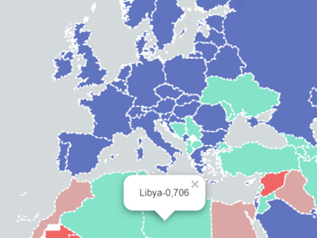

1. Choropleth map of Human Developent Index
World map displaying countries´ Human Development Index. Data were retrieved from 2018 UNDP report and added to a shapefile previously downloaded from Natural Earth Data website. Countries are classified by UNDP into four categories according to the index´s value: (1) very high, (2) high, (3) medium and (4) low human development. Different colors represent those four groups as displayed in the map´s legend.
